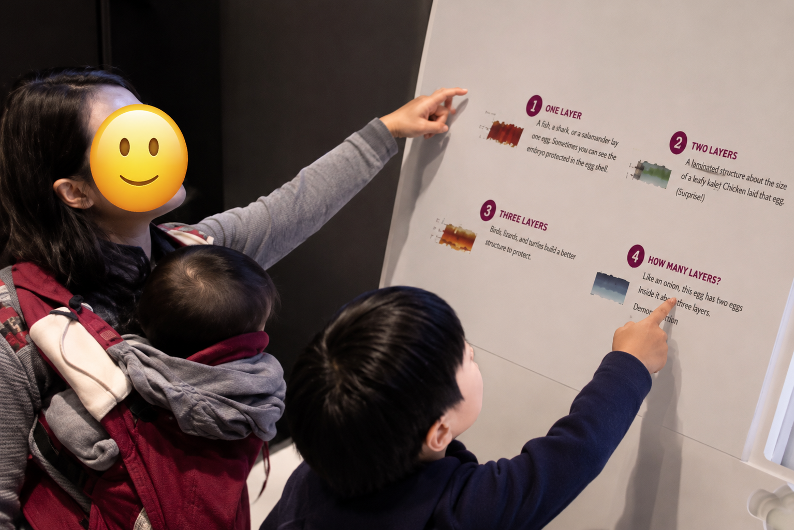

FLOA is a teacher education initiative that invites preservice teachers to learn with and from multilingual families in community settings. Rather than viewing families through deficit perspectives, FLOA helps future educators recognize family knowledge, cultural practices, and multilingual resources.
Across multiple semesters, preservice teachers conduct observations of family learning in museums, libraries, and community spaces. They analyze fieldnotes, video clips, and family interactions before designing literacy instruction informed by what they observed.

The FLOA project has now been implemented across multiple semesters with more than sixty preservice teachers. Current work explores how public libraries can become important sites for teacher learning and community-engaged literacy education.